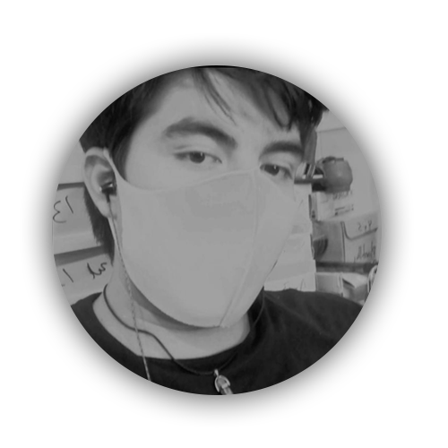

About me
Soy un chico de 19 años que tiene una gran pasion por la programacion y el diseño grafico curso el cuarto semestre de la ingenieria en sistemas en el tecnologico de calkini en campeche actualmente soy student ambassador en NogaraDevCode ademas de la programacion tengo otras pasiones como escribir novelas literarias, jugar videojuegos la historia del automovilismo y deportes
Mis pasatiempos
tengo varios pasatiempos pero los que mas destacan son los siguientes
- Escribir novelas literarias
- Edicion de videos
- ver documentales de todo tipo
- Salir a caminar
- Jugar videojuegos
- Leer
Como conoci la programacion
Mi historia comienza cuando yo tenia 15 años mi hermano empezaba a estudiar sistemas computacionales yo apenas estaba en la secundaria y veia a mi hermano hacer sus proyectos con sus amigos y me interesaba y me quedaba viendo como hacian pequeños programas o proyectos mas grandes mas nunca me llamo la atencion aprender no fue hasta cuando me cambie de preparatoria cuando me toco el taller de programacion, tenia la idea de programacion mas nunca habia hecho nada, el primer lenguaje que conoci fue phyton en donde use muy pequeños programitas basicos hasta que luego pase ala materia de paginas web donde me llamo un poco mas la atencion la creacion de las mismas termine la prepa pero nunca paso por estudiar algo relacionado a la programacion, yo queria estudiar derecho penal pero caundo iba a inscribirme para el examen note que ya habia cerrado la convocatoria y me agüite pero en una platica con unos amigos me hicieron que me animara a meterme a sistemas y sin pensarlo me inscribir y termino gustandome la carrera aunque sea una relacion amor-odio con la misma